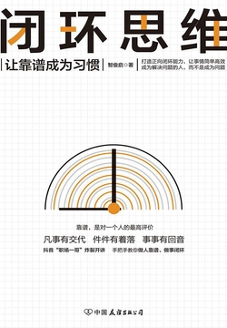

你正在使用无限卡阅读付费部分

闭环思维
智俊启
- 版权信息
- 前言
- 上篇 思维闭环：有始有终有反馈
- 第一章 让工作可交付，而不是“我尽力了”
- 寻找借口，就是在制造障碍
- “常有理”的人没有未来
- 别找借口，要找方法
- 凡事为公司考虑
- 你替公司思考过吗？
- 公司好，大家才能好
- 把公司的钱当自己的钱对待
- 反复的人或事，都不可取
- 找替罪羊会让自己也变成替罪羊
- 有备才能无患
- 第二章 带着建设性意见和领导沟通
- 谁负责就听谁的
- 谈判对象是客户，不是老板
- 公司是老板的，工作是自己的
- 先做好自己的工作，这是最起码的要求
- 不要只为薪水做事
- 及时汇报，别等雷劈
- 让上司随时知道你在做什么
- 如何跟上司有效地沟通
- “我”对公司举足轻重吗？
- 像老板一样思考，拥有更宽的视野
- 为公司着想，把工作做到极致
- 事业心决定你的事业高度
- 提升职业认知度，主动做好分内事
- 勤于思考，积极行动，才能有更大的事业成就
- 第三章 老板思维也是闭环思维
- 公鸡和母鸡的价值
- 必须做一个无人能取代的人
- 有价值才有地位，没价值就会被抛弃
- 老板拿什么拯救你？
- 不努力也不学习，没人能救你
- 最忌讳的是“吃老本”还骄傲自大
- 凭什么跟老板谈判？
- 你凭什么加薪？
- 公司对你的奖罚一定有道理
- 升职加薪的正确述说方式
- 一定是你做错了什么
- 忽略了细节，你就失去了成功的50%
- 做对十件事，抵不上做错一件事的损失
- 一定是你做对了什么
- 价值往往通过细节体现
- 机遇也往往潜藏在细节之中
- 在这个公司都做不好，跳到另一家就能做好吗？
- 那山不一定就比这山高
- 想一想有没有离职的实力再做决定
- 敢不敢与公司对赌？
- 恐惧风险，你就一定失败
- 对赌：强者为王
- 中篇 做事靠谱：凡事有交代，件件有着落，事事有回音
- 第四章 丢掉“学生思维”，是靠谱的第一步
- 公司不是学校
- 真的好，怎么会没人培养？
- 尊重不是别人给的，是自己挣的
- 机会满天飞，能否把握看自己
- 企图心：无欲无求，无路可走
- 给你机会，抓不住也无用
- 发现自己的错误很难
- 感谢那些“折磨”你的人
- 在低谷中自我修正，实现关键突破
- 信心很重要
- 终究是你自己的原因
- 要改变，也要适应
- 行不行，谁说了算？
- 从基础做起
- 不屑于解决小问题，就没机会解决大问题
- 要想“高成”，必先“低就”
- 抱怨不如想办法
- 抱怨换来的不是同情，是轻视
- 多想办法，而不是怨天尤人
- 必须明白参加培训的意义
- 第五章 做事靠谱，更容易被委以重任
- 工作要细心
- 个人负责，从小处着手
- 工作之外的细节，也丝毫不能忽视
- 勿以恶小而为之，勿以善小而不为
- 占小便宜吃大亏
- 无论多小的事情，都应坚守原则
- 真的确定准备好了吗？
- 完美的结果，取决于细致的规划
- 清楚自己要干什么，然后真的准备好
- 不是老板要求多，是你自己不用心
- 小问题都解决不了，又怎能承担重任？
- 敷衍工作就是在敷衍你的前途
- 做事要有耐心
- 做好眼前的每一件工作
- 贵在坚持
- 即使是小小的工作笔记，也要养成坚持的习惯
- 磨难是锻炼的好机会
- 责任！责任！
- 没有能力不可怕，没有责任心最可怕
- 你能担多大的责任，就值得拥有多高的职位
- 老板的选择，是员工决定的
- 第六章 没有最好的，只有最对的
- 执行命令
- 执行比想法重要
- 行动力是“解决力”的基础
- 工作要主动
- 被动等待，是消极工作的表现
- 主动寻找机会，才能做出更好的成果
- 老板的竟见不用解释，做就是了！
- 凡事无论对错，态度错了皆输
- 少问多做，行事才算机敏
- 分外事也是加分项
- 不要只顾眼前的利益
- 立足长远，主动参与
- 不怕犯错
- 听清指令
- 想执行到位，就要先领会到位
- 思维不要太跳跃
- 对路才是好
- 听指挥，事情还要做到位
- 明确目标，行动要有针对性
- 第七章 敢说“我错了”三个字，也是靠谱的表现
- 帮人，需要条件
- 帮忙前先处理好自己的事
- 求人帮忙，也要为别人考虑
- 拒绝也是一种最佳选择
- 点燃自己并照亮他人
- 不要担心别人超过你
- 大家好，才是真的好
- 逃避不是办法，有事正常沟通
- 多沟通交流，才能解决问题
- 逃避问题，问题便越来越严重
- 下篇 结果可预测：不给协作者带来风险
- 第八章 搞定自己职责范围内的一切问题
- 老板只想听谈判成功了！
- 要结果，不要加班
- 努力没结果，等于没努力
- 闭环：完成任务不等于就有成果
- 搞定一切
- 努力工作，也要善于工作
- 胜任是标准
- 制度只注重结果，不会照顾意外
- 老板装瞎，不是真瞎
- 听懂要求
- 面对错误，不如解决错误
- 纠错，是闭环思维的重要一步
- 第一时间认错，还要第一时间改错
- 第九章 努力的“姿势”再好看，没有成果也白搭
- 汇报工作说结果
- 把最核心的信息用30秒说完
- 简单明了，先从结果谈起
- 工作该谁干？
- 相比努力，高效更重要
- 要聪明而不是忙乱地去工作
- 要有信心提高自己的效率
- 拖沓是个坑
- 在拖拖拉拉中，你的“包裹”会变成“包袱”
- 解决拖沓，需要有实效性的计划
- 工作要有明确时间节点
- 做事有条理，才能提高工作效率
- 这是工作时间
- 工作时间内做好本职工作，才能提升效率
- 不要“时间倒置”，要顺从规律
- 去粗取精，善始善终
- 第十章 不给协作者增加麻烦，是职场的一种素养
- 不以规矩，不能成方圆
- 权力不是解决问题的唯一途径
- 目光要全面立体
- 功劳和责任密不可分
- 提拔那些懂得分享的人
- 看数据！数据！
- 实事求是莫偏激
- 凡事没有弄清楚，就不要盲目下结论
- 有些重要的事要自己干
- 越级是大忌
- 创业须慎重
- 方向不靠谱，创业就会死在起点
- 每个人都是潜在的明星，但不是必然的明星
- 摆正位置，实现闭环
前言
在这么多年的管理工作中，有一些员工的工作态度让我很满意，每次给他们安排完任务后，不管这个任务后期做得如何，他们都会给我一个准确的答复——结果、问题、原因及与工作相关的种种必要事项，他们都做得很好。这样的员工让我感觉非常靠谱，因此我也愿意把重要的工作交给他们。这就是工作中的闭环思维。从本质上来看，闭环思维强调的并不仅仅是责任心，它还强调了我们在工作中的团队配合精神和对同事关系的敏感性。就是说，闭环思维不仅要求团队成员完成工作本身，还需要照顾到与此相关的每一个人，考虑他们的感受，尊重和满足他们的合理诉求，并在结束时给对方一个答复，和整个团队一起实现工作的闭环。比如，上司让下属在10天内撰写一份方案，下属可能需要与上司沟通方案的具体内容，达成基本共识，还要进行大量的调研，然后才能撰写出符合公司利益与上司要求的内容，通过某种方式发给上司。这是否便是闭环呢？答案是：不完全是。因为过了几天，上司生气地把下属叫过来，问他方案写好了没有。下属却一脸无辜地回答：“我已经发给你了。”问题出在什么地方？出色地做好方案并发给上司并非这项任务的全部目标，下属还要做到精准的反馈，即通过口头或者电话方式告知上司：我的方案已经发给你了。在这个过程中，上司也许没有意识到闭环的理念，但他一定认为这个下属是不靠谱的。他会发现这名下属在工作中有所缺失，无法给予他更大的信任，也不能交给他重要的任务。以下是闭环思维带来的益处：第一，强调闭环思维，可以提高管理中的任务完成度，保证员工从工作开始到结束落实每一个环节，并及时给上司回馈。第二，贯彻闭环思维，可以优化管理的效率，因为如果上司发起了一件事，下属不管做得如何，都会最后反馈到发起者，上司能及时准确地知道结果，不需要事事催问。
上篇 思维闭环：有始有终有反馈
思维闭环：有始有终有反馈公司是一张网，当他人在网络协同过程中发起某一事情或工作时，在一定时间内，不管执行者是否完成以及完成效果如何，都要认真地将结果反馈给发起者。尤其是面向上级时，如果上级交代了一件事，下属应该竭尽全力去完成，而最后不管完成的质量如何，都应该在约定的时间内给上级一个反馈，这就是闭环。
第一章 让工作可交付，而不是“我尽力了”
一个想有所成就的人应该具备的品质是出了问题不推诿，也不狡辩，以公司的利益为第一标准，积极地寻找办法解决，弥补自己的失误。如果开始找借口，就等于在不断地为自己后面的工作设置障碍，也在损害上司对自己的信任。
别找借口，要找方法
别找借口，要找方法
凡事为公司考虑
，如凡事为公司考虑，而不是替客户出谋划策。
你替公司思考过吗？
你是谁的员工，拿谁的工资，就要全心全意地为之奉献，用成绩说话，帮公司赚取最大的利润。
公司好，大家才能好
要多为公司考虑，让自己的利益在公司利益的基础上得以实现
把公司的钱当自己的钱对待
减少企业运营成本的两大渠道，一是企业在制度和业务流程层面的规定，约束员工控制与工作相关的支出；二是要培养员工主动节约、替企业省钱的习惯。
花公司的钱不心疼，但涉及自己的利益时，态度就有了变化。举这个例子的目的是想说，员工在追求一个项目的最大利益时，要把公司的钱当自己的钱去花，要有成本预算的观念。
反复的人或事，都不可取
公司要发展，就要多做靠谱的业务，多结交靠谱的客户。这是老板的目标，也是员工的责任。老板要有一双火眼金睛，把好大方向；员工要在实际的工作中体现效率，别在不靠谱的业务和客户身上浪费时间。
有一次我把客户刘先生的项目支援全部撤掉了，负责这个项目的小辉不解地问：“刘总那边的项目很大啊，您为什么放弃？”我说：“原因很简单，这个项目谈了两个多月仍毫无进展，你想想从你的手中流失掉的客户有多少了？你天天在忙，可为公司带来的成交订单有多少呢？时间都在扯皮上了，是不是？”小辉还想说服我：“老板，您不明白坚持的道理吗？坚持才有收获啊！而且刘总刚才说，他考虑上调对我们公司的报价预算呢！”我说：“就是因为他又调整了报价，我才决定放弃的。记住这句话，易涨易退山溪水，易反易复小人心。今天他为了不失去这个生意提高报价，明天他也会因别的理由突然又调低报价。以后凡是这种反复的人、事，都要多留个心眼，别在上面浪费精力！”
石油大王洛克菲勒在崛起初期的时候，曾跟合伙人说过一句话，就是“不要跟鬣狗合作”。短短几个字，他就把生意原则描述得淋漓尽致。因为鬣狗的警惕性强，习性狡猾，反复无常，和这种客户合作就像在跟飘忽不定的布条玩游戏，他们容易失信，也缺乏长期和坚定的思路。
找替罪羊会让自己也变成替罪羊
找替罪羊会让自己也变成替罪羊
上司做出的决定未必就是正确的，他可能不了解情况，只能给出一个大体的方向，这要求员工执行时多做一些准备，务实地执行，也要灵活地变通。
企业最需要的是员工解决问题的能力。员工的能力靠解决问题体现
不要觉得自己有替罪羊就可以免责，找替罪羊的行为只会让自己成为牺牲品。如果事态已经偏离了轨道，那么就要勇于承担，而不是想让别人替自己遮风挡雨。企业需要的是敢承担和勇于负责的人。出了事急着找替罪羊，结果很可能是自己成为那个牺牲品，不会取得老板的认可。这也是一种侵犯企业利益的不良行为。
有备才能无患
有备才能无患
许多意外情况的发生都是由于我们未能做好充分的预案，没有想到那些突发情况，并提供第二、第三乃至第四个计划。在工作中一定要准备多套备用方案，把方案落到实处，有备才能无患。那些工作认真、办事细心的人，他们善于考虑到一切情况，预估问题的变化，想好了再去做。他们凡事都可以做好最坏的打算，以免事到临头，却没有应对之策。
第二章 带着建设性意见和领导沟通
带着建设性意见和领导沟通
第一，管理者比下属更了解公司产品的需求。管理者对产品设计、开发的定位，下属应该绝对执行，不能打一点折扣。下属当然也可以有自己的想法，但应该在执行前的产品会议上提出，由管理者决定是否采纳。这是每一名员工都应具有的执行意识。第二，上司的指令不是针对谁。上司提出的修改意见，肯定是来改善员工的不足，不是专门挑毛病。对事不对人，是上司审视或批驳员工工作的主要原因。所以，当员工交出的结果被上司挑剔、批评或否定时，别以为他是在针对自己，要虚心接受并且纠正自己的错误。第三，谁负责就听谁的。在企业中，往往是管理者对结果负责，员工却负不了责，所以员工必须听从上司的安排。在闭环思维中这是一项很重要的原因，企业的管理层级环环相扣，每个人都是这个系统中的一个环节：向自己的直接上级负责，交出合格的结果。
公司是老板的，工作是自己的
公司是老板的，工作是自己的
先做好自己的工作，这是最起码的要求
先做好自己的工作，这是最起码的要求
不要只为薪水做事
我曾经给员工讲过一则故事：一个监狱中收押了三个要被关上三年的罪犯，在他们入狱前，监狱长说要答应他们每人一个要求。第一个是美国人，他喜爱抽雪茄，于是他向监狱长要了几箱雪茄。第二个是法国人，浪漫和风流的他向监狱长要了一个美女，陪着他度过漫漫的三年。第三个是犹太人，他向监狱长要了一部与外界联系的电话。然后三年很快就过去了，三人也都将获得自由。在被放出监狱的时候，美国人最先冲了出来，并大声叫嚷：“火，给我火！”原来美国人要了雪茄却忘了要一个打火机，三年，他都没有抽到一根雪茄。第二个走出监狱的是法国人，他带着那个美丽的女人，以及两个孩子，有了一个幸福的家庭。犹太人是最后走出监狱的，他举着电话，高兴地与监狱长握手：“谢谢你！因为你，这三年我的业务一点也没有耽误，我决定送你一辆车以示感谢。”讲完这则故事，我对员工说，一个人要创造未来，最需要的不是看到未来，是对当下做出一个明智的选择。明白现在该做什么，然后立刻去做，才能为未来打下基础。现在只想薪水、想回报的，就是第一个要雪茄的美国人。作为企业的员工来说，要杜绝自己这种短视的想法。
及时汇报，别等雷劈
及时汇报，别等雷劈
“第一，作为上司，我每次给你安排的任务都是你能完成的工作量。如果你总是不能按时完成，说明你的执行很差，这会影响我后面给你安排其他任务。你要知道工作是不等人的，你在规定时间内做不完这件事，公司就要考虑换其他人来做后面的事。”“第二，如果你真的做不完，就要及时跟我汇报，不能等我问你再告诉我‘实在做不完’。要及时汇报，别等雷劈。这也是对工作、对上司的尊重，是最基本的工作素质！”
让上司随时知道你在做什么
让上司随时知道你在做什么
让上司知道你在干什么，也是对你自身的一种帮助，因为管理者往往比下属更具有职业经验，更了解某些风险，及时地让他了解你在做的事情，进行到了哪一步，他就能帮助你避开风险，或者给你一些帮助和建议，你会比自我摸索更加快速地成长。
如何跟上司有效地沟通
如何跟上司有效地沟通第一，认清沟通双方的角色。你要清楚地意识到自己是在跟上司沟通，而不是和同事或朋友交流。他是老板，你是员工，要避免出现随意和不负责任的态度，时刻注意自己的言行，尊重上司的身份和他的权威。第二，了解上司的特点。你的上司脾气是暴躁还是温和，是固执还是灵活，你都要十分清楚。对于暴躁和固执的上司，一定要采取迂回和委婉的方式汇报工作，注意引用各种数据；如果你的上司是温和以及灵活的风格，那么可以大胆提出自己的建议，充分表述自己的看法。第三，以公司为核心。汇报工作时的态度，必须站在公司利益的立场上而不是个人立场。假如你的工作没做好，向上司说明理由时又频频维护个人的利益，强调客观原因，上司就会认为你心中没有公司，只有自己。一般来说，这样的员工是没有前途的。如果你事事以公司利益为先，即便工作没做好，上司也容易表示理解，还会给你机会，汇报工作时就不会有太大的麻烦。
像老板一样思考，拥有更宽的视野
像老板一样思考，拥有更宽的视野
为公司着想，把工作做到极致
为公司着想，把工作做到极致
作为老板来说，他们其实并不喜欢每天朝九晚五、按部就班工作的员工。他们最希望看到的是，所有的员工都能真正地将公司的事情当作自己的事情来做，为公司省钱，让上司省心，让团队的利益最大化。
事业心决定你的事业高度
事业心决定你的事业高度
提升职业认知度，主动做好分内事
提升职业认知度，主动做好分内事
当你把自己的位置放得更高时，就该有一个更高的职业认知度，要明白自己的人生高度并不仅仅只限于找好的工作，而必须在眼下的工作中挖掘更大的机遇
勤于思考，积极行动，才能有更大的事业成就
勤于思考，积极行动，才能有更大的事业成就
第三章 老板思维也是闭环思维
母鸡一天一个蛋，汤锅靠边站。公鸡一天一打鸣，主人刀下也留情。”
工作不相信辛苦的眼泪，只相信贡献带来的价值。
必须做一个无人能取代的人
必须做一个无人能取代的人
闭环思维的根本原则就是反馈结果，创造价值。
如果你在公司不是一个无法被取代的核心人才，那么公司早晚有一天会择机找人替换你。在这一点上，普通员工和管理者是平等的。
有价值才有地位，没价值就会被抛弃
有价值才有地位，没价值就会被抛弃
不在别人身上去找原因，而是先在自己的身上找问题。
不努力也不学习，没人能救你
不努力也不学习，没人能救你
最忌讳的是“吃老本”还骄傲自大
最忌讳的是“吃老本”还骄傲自大
第一，骄傲自大、从不学习的人，是在自讨苦吃。
不会没关系，不努力提高才是问题。
我们要从问题中汲取教训，不要在一个地方跌倒两次，要努力提高工作的水平，学习最新的工作技能，才能体现自己在公司的价值。
凭什么跟老板谈判？
第一，没奉献出足够的价值，就没有谈判的资格。
第二，提高能力，成为公司不可缺少的人。
公司对你的奖罚一定有道理
人在企业中的价值不是恒定不变的，而是动态发展的。
不要卖力表演，结果不会骗人
升职加薪的正确述说方式
谈判是一种由双方共同参与的博弈，无论你有多么优秀，都必须根据公司的需要、自身的价值和时机制定正确的方案，从老板那里寻求更符合自己条件的职位和薪资。第一，先自我评估。请自行搜集以下信息：过去6个月的平均业绩是否比以前有较快的增加？是否展示出了足以达到公司考核标准的工作水平（可数据化）？是否得到了上司、同事的一致好评（工作关系）？自己近期的综合工作表现是否已达到了申请加薪或升职的标准？第二，等待合适的时机。你确实很优秀，这只是达到了第一个标准，还需要成为公司内部计划升职加薪的对象，也就是进入考核名单，迎来一个合适的时机。这时提出你的要求，成功率将大大增加。第三，提供书面报告。向公司提出升职加薪的要求时，应该打一份书面报告，用数据总结自己的成绩：我之前在多长的时间里做出了多少业绩，在公司的排名如何；然后提出诉求：我想升职带领一个团队，想增加多少薪水。再说出自己的工作计划及工作预期：准备带领几个同事，用什么样的方法，在多长时间内，完成什么样的业绩。这说明你的准备很充分，想法也很理性，并非一时冲动的行为，公司才会予以重视。而且，能做到这几步本身就是能力的体现。
忽略了细节，你就失去了成功的50%
忽略了细节，你就失去了成功的50%
处理小事的能力非常体现一个人对于公司的价值，所以有智慧的人是不会忽略细节的。
做对十件事，抵不上做错一件事的损失
做对十件事，抵不上做错一件事的损失
一定是你做对了什么
能力不足可以培养，好的品质却是一种稀有的资源，必须把她留住。
机遇也往往潜藏在细节之中
对细节的把握，体现了一个人的责任心。想要具备随时做好细节的观念，就要树立起对于工作的责任感，把公司的事当成自己的事，端正态度。
把小事做对，大事就有机会。
在这个公司都做不好，跳到另一家就能做好吗？
既然你还不确定，那我可以给你个建议，你现在离开不是好的时机。为什么？因为你现在走，我完全无感，很快会忘记你，公司也毫无损失。你应该趁着在公司的机会，拼命地去为自己拉客户，成为在公司独当一面的人物，到那时候你如果走的话，公司将损失惨重，那么你至少可以获得跟我谈条件的机会。而且如果你真的做到了，收入会提高，职位会升迁，同事会尊重你，客户会看重你，你在公司便有了价值感和存在感，也许就不需要也不想离职了，届时你想的是，如何才能将工作做得更好。
想一想有没有离职的实力再做决定
想体现价值就得脚踏实地，不要这山望着那山高，脚下实打实地走出来的路，实打实地征服的山峰才更能证明自己的实力。
恐惧风险，你就一定失败
我们做任何事情都有两种可能性，一是成功，二是失败。取决于我们投入多少，投入多，成功的概率大；投入少，失败的概率大。站在企业的角度，员工的价值体现在“可以用较小的投入获得较大的成功概率”。
中篇 做事靠谱：凡事有交代，件件有着落，事事有回音
做事靠谱：凡事有交代，件件有着落，事事有回音
做事靠谱的人从协作网络上接到一个信息或者任务，处理完毕之后，一定会再反馈给网络，确保两头连接。而且不管结果怎样，都会给当事人反馈，尤其在出现过失或错误的时候，更不会逃避责任或不了了之。
第四章 丢掉“学生思维”，是靠谱的第一步
员工永远别指望由老板带着进步，除了你自己，别人是无法帮助你进步的。
尊重不是别人给的，是自己挣的
尊重不是别人给的，是自己挣的
要想公司尊重你，首先你要学会尊重别人。对待上司，你完整和高效地完成工作，这是一种对工作的尊重，同时也是对上司的尊重，更是对你自己的尊重
企图心：无欲无求，无路可走
人有了上进心，就愿意主动学习知识，努力捕捉机遇，并且想办法实现目标，给公司一个完美的结果。
人为什么会进步？那就是欲望的驱使。欲望就是上进心
一个有进取心的员工，就需要一种对结果、对成功的强大企图心，想尽一切办法把握机会，把事情做好。
给你机会，抓不住也无用
一个人的实力是需要表现出来的，表现的最佳方式，就是抓住机会，创造价值。
发现自己的错误很难
每个人在工作中别过于自信，要养成自省的好习惯。通俗地说，自省就是当事情做不对时，及时意识到哪里出了问题，然后在别人的批评、督导下立刻改正，提高自己解决问题的能力，适应环境的要求。
感谢那些“折磨”你的人
感谢那些“折磨”你的人
：在压力下前行，能让你变得更强；在升力下前行，只会退化自己有力的翅膀。
真正促人进步的不是从书本上学到的知识，而是那些在现实中被对手、被问题所激发出的潜能
在低谷中自我修正，实现关键突破
在低谷中自我修正，实现关键突破
信心很重要
自信，是每一个成功人士的共同点。
树立信心的四个步骤：第一步，经常肯定自己，突出自己积极的一面。每天要告诉自己：“我有很多的优点以及值得骄傲的事情！”这样可以给自己一天的生活、工作注入积极的力量。第二步，经常与自己对话，做一个能够与自我交谈的人。在自我交谈中，不要去诋毁自己的能力，而是要鼓励自己最大限度地发挥优势，体现出应有的价值。第三步，工作要做到精益求精。必须不断地完善和改进自己的工作技巧，工作中为公司提出更好的建议，创造更多的效益，提供更好的结果。那么管理者肯定愿意给你更高的位置，提供更有力的支持。第四步，抓住机会，大胆发挥自己的才干。要将自己擅长的事情列出一个详细的清单，在自己暂时不擅长的方面努力去做出弥补和改进，同时在有限的机会中充分发挥自己的才能，用表现让公司重视、重用自己。
终究是你自己的原因
鸿海集团的总裁郭台铭在自己的公司视察，正跟工程师谈话的时候，一个员工忍不住对他大声说：“老板，为什么累死累活的是我们，收益的却是你！”这名员工是个新人，表情很气愤，说话也很冲动，让在场的人都大吃一惊。郭台铭没有生气，而是很耐心地跟他说：“第一，我拼上了全部的家当创建这家公司，承担着所有的风险，不成功便成仁，你只需要寄简历到我这里上班，随时都可以离开，没什么风险，这是创业者和打工仔的差别。第二，我需要不断地创新，什么事情都要做、都要管，你只用做好自己的分内事就行了，但还时不时地闹情绪，这是选择与被选择的差别。第三，我每天24小时都要思考公司怎么才能发展，创造收益，每一个决定都影响到公司的所有人，责任重大，你只需要考虑自己一天的8个小时，关心你自己的工资和补助，以及有没有对你不公平的事，这是责任的差别。你只要搞明白这三个差别，就不会纠结自己的现状了。”在郭台铭的办公室的门前贴着一张纸，上面写着一句话：“遇到问题先想好三个解决方案再敲门！”他用这句话告诉自己的员工，遇到问题要先内化，从内在寻找解决的路径，而不是把问题的责任归咎于外界，才能真正地获取成长。无论你的工作遇到了什么困难，情绪有多大的波动，感受有多么消极，本质上其实都是你自己的原因，和别人无关。当一个人参加工作以后，他就不再是学生，而是需要完全对自己负责的社会化成人。不管环境如何，都要从自己身上思考解决之道。
要改变，也要适应
第一，不能适应，就只能淘汰。
第二，既要低头努力，也要抬头看天。成功离不开辛勤的耕耘，所以人们总是说要像老黄牛一样低头努力。但这句话的后一半是什么呢？在我看来，是“也要学会看天吃饭”。形势变了，就得顺从趋势；环境变了，也要先适应环境，然后再想办法改造环境。
行不行，谁说了算？
你应该在乎的顺序排行是这样的，第一，你自己；第二，老板和工作；第三，工作的心态和方法，至于别人的声音和非议，应该排在前十名以外！假如你用同事的意见评估自己，你永远都是不行的，明白了吗？
命是与生俱来不可改变的，但命运却是可以因为我们后来的努力而发生改变的。
不屑于解决小问题，就没机会解决大问题
不屑于解决小问题，就没机会解决大问题
要想“高成”，必先“低就”
要想“高成”，必先“低就”
特别是对职场新人来说，你要学会去适应一份工作的基本要求，而不是让工作去适应你的美妙想法。
抱怨不如想办法
抱怨不如想办法
抱怨换来的不是同情，是轻视
抱怨换来的不是同情，是轻视我最不欣赏的人，就是那种爱抱怨的人。抱怨不仅会影响自己和周围人的心情，还会让我们的时间都花在推卸责任上，使得工作效率低下，同时让自己整天处于一种不快乐的状态，影响自己的心理乃至生理的健康。
多想办法，而不是怨天尤人
多想办法，而不是怨天尤人
必须明白参加培训的意义
公司组织培训的目的，是想让你们学习工作职责以外的知识，我所说的春游，是让你们把这种学习知识的状态当作春游一样放松，不要有负担，而不是让你把培训当成春游。所以你要重新做一份方案，如果游玩项目多了，大家就都以为是春游了，会严重影响培训效果。但是培训完成后，晚上你们好好聚一个餐，甚至举办篝火晚会也是可以的！
哈佛大学有一个著名的“两小时”理论：人的差别在于业余时间，一个人的命运决定于晚上8点到10点。
第五章 做事靠谱，更容易被委以重任
只有细心，才能专业，也才能敬业。
勿以恶小而为之，勿以善小而不为
勿以恶小而为之，勿以善小而不为
他不仅眼睛里有工作，心里也有，并且具有执行力，公司当然要留下这样的员工。
无论多小的事情，都应坚守原则
无论多小的事情，都应坚守原则
完美的结果，取决于细致的规划
完美的结果，取决于细致的规划
其实，初入职场（刚入企业）的前3年，是一个人锻炼他的能力、积累资本最为关键的黄金3年，在这3年中，我们的每一次改变都会付出巨大的代价，每一个决定也都有可能同时改变自己的命运。
清楚自己要干什么，然后真的准备好
清楚自己要干什么，然后真的准备好
不是老板要求多，是你自己不用心
不是老板要求多，是你自己不用心
正因为你一次次都做不好，我才不得不一次次地教你！再这么不用心，公司就得找人替代你了！
小问题都解决不了，又怎能承担重任？
小问题都解决不了，又怎能承担重任？
一个人假如连解决小问题的耐心都没有，他也不可能把大事做好。耐心和专注，向来是成功的最大助力！
敷衍工作就是在敷衍你的前途
敷衍工作就是在敷衍你的前途
做事要有耐心
如何在做事时用耐心取得成效？第一，明白对方的利益点。比如，我们和客户、同事之间往往会存在着工作和朋友两种关系。当利益方面发生冲突时，沟通就会变得复杂，对方想让你付出更多，不断找你“麻烦”，很容易失去耐心，爆发冲突。这时你首先要明白的是，你们之间的问题出在朋友层面还是工作层面，对方的利益需求点在什么地方。搞清了这个问题，心中就有了底气，便能从容地应对。第二，适当控制自己的情绪。不管和谁进行工作交流，都要注意控制自己的情绪，不能在对方的刺激下随性而为。一个失去耐性的人是不适合承担重要工作的，优秀的人才向来都拥有强大的自控力。所以必须养成控制情绪的习惯，在客户和棘手的工作面前做到宠辱不惊，展现自己出色的工作能力，赢得客户的认同和老板的赞赏。
做好眼前的每一件工作
聪明是好事，但我们不能把希望都寄托在聪明上，小心走好脚下的每一步才是适合于大部分人的成功模式。
即使是小小的工作笔记，也要养成坚持的习惯
即使是小小的工作笔记，也要养成坚持的习惯
写好工作笔记，就是每天早上安排一天的工作，下班前再整理自己的工作，便能够给未来的工作做一个良好的参照。
磨难是锻炼的好机会
第一，折磨自己，方获重生。
第二，从细节中修习心性，从煎熬中沉淀意志。
没有能力不可怕，没有责任心最可怕
没有能力不可怕，没有责任心最可怕
责任心强的员工不仅能完成上司交代的基本任务，对待工作还有深度挖掘的精神，细心而且高效。
你能担多大的责任，就值得拥有多高的职位
“在工作中你能担多大的责任，就值得拥有多高的职位。”
第一，公司没有与我无关的事。
第二，对待工作要统筹兼顾，考虑周全。
老板的选择，是员工决定的
效率永远大于劳力，要想让工作有价值，首先要把事情做细。假如你忙忙碌碌了一整天，累得就像脱水的驴一样，做出的工作却不敌别人一个小时的贡献，你怎么能得到老板的青睐呢？只听话是不够的，还要利用有限的时间做出最大的贡献，提供超额的价值。
执行比想法重要
执行比想法重要对于一支优秀的团队而言，决策力、执行力、解决力这三种力都非常重要，它们也是一个闭环系统中的三个重要组成部分。
员工的想法与管理者的命令有冲突，决策常常执行不下去。
行动力是“解决力”的基础
动力是“解决力”的基础在管理中，行动胜过千言万语。员工的解决力是基于行动产生，而不是源于对上司命令的质疑。服从很重要，员工首先要有行动力，然后才有解决力。
被动等待，是消极工作的表现
被动等待，是消极工作的表现
主动寻找机会，才能做出更好的成果
主动寻找机会，才能做出更好的成果
在闭环思维中，主动是一个与效率息息相关的因素，是一种可以让人变得靠谱、让工作变得高效的好品质。
第一，机会需要主动创造，也在主动的工作中开花结果。要让领导发现你，让上司看到你想要去做某件事情的意愿和决心，才能在激烈的竞争看现在获得更多的发展。
第二，主动还意味着对现状不要满足，要继续向上攀升。
老板的竟见不用解释，做就是了！
老板的竟见不用解释，做就是了！
凡事无论对错，态度错了皆输
凡事无论对错，态度错了皆输
少问多做，行事才算机敏
少问多做，行事才算机敏
尼尔的父亲是一位渔民，有一次尼尔跟随父亲出海打渔，看到大海，他发出了感慨：“海是多么伟大啊，它滋养了那么多的生灵。”父亲看着自己的孩子，问他：“你知道海为什么那么伟大吗？”尼尔不敢贸然地回答，接着父亲答道：“因为海的位置低，它才能装那么多的水。”关键就是这句：位置低。摆正了位置，才能容纳万物，才懂得少问多做的道理。现在许多年轻人和新入职场的员工摆不正自己的位置，没有行动力，还喜欢给上司添麻烦。用一句俗话说，就是“胸有千言万语，脚下实无一物”。第一，心可以在高处，手一定要在低处。
第二，主动出击，不要等！
分外事也是加分项
分外事也是加分项
“乐于助人”在不影响自己工作的前提下绝对是深受上司欣赏的加分选项。
不要只顾眼前的利益
不要只顾眼前的利益以前我看过一个教育类的短动画片，说有一位老人非常喜欢猴子，所以他自己就养了很多的猴子。有一年地里收成不好，产出的粮食有限，老人就对猴子说：“现在粮食不够，必须节约着吃，现在每天早上吃三分之一的量，晚上再吃三分之二的量，你们愿意吗？”猴子们听了很生气，说：“早上吃得太少了，你怎么可以这样！”老人说：“那就早上吃三分之二的量，晚上吃三分之一的量，怎么样？”猴子们听了一合计，觉得早上多了一颗，还以为自己占了便宜，于是高兴地接受了。但事实是老人给猴子的粮食总数并没有改变，猴子的行为是一种只顾眼前利益的表现，它们不看长远，是比较自私的心理。等粮食吃光了，它们就会受到这种短视行为的惩罚。
立足长远，主动参与
立足长远，主动参与对眼前的利益锱铢必较，不想多出一分力，是很难在职场上获得成功的。企业愿意提拔那些主动参与工作、帮助同事的员工，这样的人才是中坚力量，是未来潜在的精英，能承担更大的重任。因此，做事情一定要有一个长远的计划和广阔的视野，做好自己的事的同时，也要拿出余力帮助其他人。这也是行动力的重要组成部分。
不怕犯错
她希望把事情做得更好，但是尚欠缺主动行动的精神。原因是：第一，她怕犯错，因此虽然有创造性的想法，但必须问清了老板的意图后才敢采取行动。第二，有过于死板的遵守规矩的心理，比如遵守以前的惯例、不敢突破传统等。这两点在大部分企业雇员的身上都有体现，甚至是如今非常普遍的职场生态——人们为了不失去工作而选择保守，宁可无功，也不想有过。但对管理者而言，一名出色的员工在工作上既要主动，也要敢于尝试，不能害怕犯错。老板不希望员工事事请示，更不希望他们过于小心地循规蹈矩。
听清指令
下属最重要的素质是什么？不是问东问西，而是执行上司命令的能力和效率。把工作执行好的前提是什么？是先听清上司让你干什么。连上司的指令都听不清楚，哪家公司愿意用你？
想执行到位，就要先领会到位
想执行到位，就要先领会到位
管理学中有一个原则叫“精准领会，精细执行”，专门用于描述领会与执行的关系。
精准领会——公司安排了什么任务，上司让你干什么。必须到位而且精准，明确理解上级的意图，而不是有所偏差。
精细执行——执行不仅要到位，而且要精准地到位。即在时间、质量、数量这三个要素上，都要执行得分毫不差，挑不出任何毛病，通俗地说就是“又快又好”。
思维不要太跳跃
思维不要太跳跃
领导让他去做一件事，他想到的是与这件事相关的其他问题，而不是马上执行领导的指示。在我印象中，很多从事创意工作的人均有这种思维习惯，他们对上司的要求有天然的对抗思维，有强烈的自主意识，缺乏快速行动的执行力。要纠正这个问题，就要在执行时建立一种本能反应——先执行，再提问。就是说，上司对你提了一个要求，只要在你的职责范围内，就不要思前想后，马上执行。等执行完了，若有疑问再与上司探讨。完成一个闭环，再开始另一个闭环。
对路才是好
对路才是好
们不仅有很强的行动力，还明白用最恰当的方法把事情做好，也就是有强大的信念和正确的方法。在闭环思维中，执行不是一个孤立的动作，它包括成功完成一项任务的各种因素，比如理解力、行动力、决策力和务实能力等，对一个人的综合素质有着很高的要求。
听指挥，事情还要做到位
听指挥，事情还要做到位
明确目标，行动要有针对性
明确目标，行动要有针对性
第七章 敢说“我错了”三个字，也是靠谱的表现
敢说“我错了”三个字，也是靠谱的表现帮人，需要条件
“不是不可以主动帮人，”我说，“是帮人的时候要确定两点：第一，你有能力帮助同事；第二，对方愿意接受你的帮助；第三，你也要确保自己的帮忙能起到作用。”
帮忙前先处理好自己的事
帮忙前先处理好自己的事
帮助同事有一个前提条件，就是不耽误自己的工作。如果有必要放下自己的分内事去协助同事，就必须请示上司，事先安排好替代者，才能既帮到别人，也不误了正在做的本职工作。
求人帮忙，也要为别人考虑
求人帮忙，也要为别人考虑
一定要考虑到对方的工作，处理好周边情况，搞好一切善后事宜，才能请同事帮忙。
考虑一下对方的想法，我们才能更好地互相帮助，这也是帮助同事的前提。要设身处地地为别人着想，我们才能让更多的人聚集成为一个整体，那么团队的共同战斗力也就得到了真正的提高。
拒绝也是一种最佳选择
不会拒绝的人往往被我们称为“老好人”。这样的一个称呼带有某种调侃的意味，做一个“老好人”不仅会让自己总是承受一些委屈，做过的好结果也往往被人遗忘。所以不管是生活中还是工作上，懂得拒绝是十分有必要的，这也是一种自己保持工作效率的成功之道。工作中，我们面对的常常有上司、同事以及客户，这些人都会有各种各样的要求来提出来，其中不排除一些不合理和不该由你做的要求。面对这样的情况，你必须去拒绝，但必须注意的是——拒绝对方时要有理有据，讲原则也要讲技巧，才能让自己的拒绝产生相对最好的效果。一般而言，我们会遇到以下三类请求，同时也有相应的三种应对策略：第一，自己分内责无旁贷的工作。这部分工作当然要以最好的质量和最高的速度来完成，也是不能拒绝的。对这一类工作，我们有条件要完成，没条件，创造条件也要完成。第二，与自己的职务有关的工作，但请求的时间不合时宜。这个就需要适量地拒绝，或者告诉对方什么时候再做比较合适，给自己一个充分的缓冲期，以使相关的工作符合自己的时间安排。第三，完全没有义务的请求。这个必须拒绝，因为它只会制造麻烦，有害无益。尽管我们有时候不得不选择拒绝某些不该由自己做的工作，我们也要遵循合理的原则。首先，说出当下的真实情况（不能接受对方的请求或要求），采取换位思考的方法理解对方，说清楚，说明白，一定不能模棱两可、吞吞吐吐。其次，用词要温和而有力，采用对方容易接受的表达方式，避免激起矛盾。最后，拒绝要趁早，在第一时间说“不”，不要过于委婉和迂回，好让对方早早另做准备，免得耽误了对方的计划，造成工作上不必要的损失。
点燃自己并照亮他人
在团队中要懂得和别人分享利益，共同成长，千万别当一名自私的团队成员，更不要踩着其他人的肩膀往上爬，把别人当垫脚石。我在公司的内部会议上说过一句话：“坏员工是老鼠，只知道偷吃仓库的粮食，从不做贡献；一般员工是猫，只负责做好抓猫的本职工作，不懂团队合作；好员工是狼狗，既能看守护院，又有友爱精神。”具备友爱精神的人，他们的工作做得好，人际关系也很好，团队精神也很强。
不要担心别人超过你
害怕别人超过自己，或者得到的奖励比自己多，进而影响到自己在公司的地位，本身就是对自身能力的一种怀疑，是不自信的表现。
大家好，才是真的好
大家好，才是真的好，任职于一家企业，从事某一项工作，我们首先要从宏观的角度去考虑问题，对于别人是否会瓜分自己的功劳所持有的态度，直接反映出了一个人是否具有团队精神，是否适合承担重任。管理者的眼睛是明亮的，员工的所作所为都被他看在眼里，也一定记在心里，并在机会适合时算总账。如果一味地崇尚个人主义，而不注重取长补短，与团队中的同事同进同退，心胸狭窄或者目光短浅，结果便是挡住了自己前进的道路。
逃避不是办法，有事正常沟通
逃避不是办法，有事正常沟通
多沟通交流，才能解决问题
多沟通交流，才能解决问题
很想让上司看到自己的能力，却又不想主动沟通。有想法又不表达，这是我最不喜欢的一种员工属性，因为这总会造成执行障碍。当上司在工作上批评他、指出他的问题时，他又暗自觉得这是在针对自己，是给他穿小鞋。所以他想逃避，以为躲到别的部门就有好运气。实际上，只有多主动地与上司交流，才能让上司知道自己的工作想法，让上司随时都了解到自己的工作状态，展示自己的工作积极性。在积极的沟通交流中，员工要告诉上司自己你做了什么，下一步想做什么，多说一些工作上的事情，少发泄情绪，上司才会觉得你是一个敬业的员工，乐于提出建议，帮助你提高工作的效能，实现自己的价值。
下篇 结果可预测：不给协作者带来风险
结果的“可预测性”，不是要求你有多大本事，而是你的能力边界要让协作伙伴知道，他们能确定在什么情况下可以找你，找你能把问题解决到什么程度。作为一个网络协同环境下的一个节点，最大的美德，不是能力多强，而是不给协作者带来风险。
第八章 搞定自己职责范围内的一切问题
搞定自己职责范围内的一切问题
拥有出色的闭环思维的人在工作中奉行的是“结果主义”，他们是效率的拥护者，是干练的代名词。
除了一个完美的结果，管理者不想看到别的任何东西。
第一，老板是工作的发起者和结果的接收者。
第二，工作没有业绩，再多的付出也是零。
要结果，不要加班
但在管理者看来，加班是不必要的，结果却是必要而且生死攸关的。
每次我的回答都是一致的：企业只认工作结果，认功劳，认成绩，但是从来不认苦劳。你是业务员，把合同签了就是检验工作结果的唯一标准；你是市场推广人员，做一个引起积极反响的广告就是工作对你的唯一要求；我是管理者，制订企业的经营计划、拿到理想的业绩就是市场检验我的最终标准。至于怎么做的，用了多长时间，对于结果来说并不重要。除非时间是考核的标准之一。所以我不希望员工加班，也不希望他们在非工作时间还浪费公司的空调、网络、水电等资源，盼望他们在工作时间内搞定所有的事情。这是所有老板的心声，没有比这更愉快的结果。
努力没结果，等于没努力
努力没结果，等于没努力
只有我们能对自己付起100%的责任，拿出100%的结果，才是一个靠谱的人。但凡在工作中取得较大成就的人，他们都有一个共同特点，那就是能对工作的成果负责，对自己该承担的责任负责。
企业最需要的就是可靠的人才——能拿结果说话的优秀人才。往大了说，“工作成果”是未来的远景，是战略规划的实现；往小了说，就是一个很小的事情所产生的结果。
我会为你的过程鼓掌，但我只会给你的结果买单。过程再好，结果很差，对不起，那也是失败！
站在组织链顶端的人不关心下面人的努力程度，只关注努力后的结果。
从老板的角度看，在对员工加薪和提拔时，并不是因为他的本职工作做得好，忙碌、辛苦等都不是加分项，甚至连及格线也不是，而是看他在规定的时间内做出了哪些成绩。说白了，一个人是否优秀并不体现在他努力的过程，而是体现在他努力的成果上。这很残酷，但又很励志。
闭环：完成任务不等于就有成果
闭环：完成任务不等于就有成果
命令是前提，任务是基础，结果是反馈，三者缺一不可
搞定一切
“自适力”：每一名成功者都能在社会系统中寻找到一个适合自己的位置或者努力说服自己适应，承担某种工作，然后逐步提升自己，向更高的位置跃升。简单地说，优秀的员工要能搞定自己职责范围内的一切问题，而不是让上司帮他清扫障碍。
努力工作，也要善于工作
自己的事情需要自己搞定，别人不会给你帮忙，上司也没这个义务。你担任某个职位，就要处理好与这个职位有关的所有工作，这就是闭环。
“适当”二字不仅要求员工的能力与他要做的工作相符合，同时也能减少员工好高骛远的程度，降低人才的流失率，充分实现命令、执行、反馈的正循环。
胜任是标准
如何成为一个“善于工作”的人？第一，不满足于现有的知识和经验。学习是永远没有止境的，用结果说话，就要学会创造更好的结果。满足于现状只会让工作停滞不前，让自己渐渐地成为一名平庸员工。所以我喜欢有野心的下属，也会尽力为他们提供展示能力的舞台。第二，不断强化自己的专业技能。学习并不是盲目、无目的，要有针对性地学习与自己工作匹配的专业技能，提高解决问题的能力。
第三，改变落伍的工作方式。
制度只注重结果，不会照顾意外
制度只注重结果，不会照顾意外
客观问题所有人都一样面对，制度只能追求结果，不可能照顾意外！
一个人的看法，决定了他的做法，他的做法又决定了他的活法。
人的认知不同，采取的行为就不同，态度也会不一样。当你意识到自己的努力并没有得到一个好的结果时，应该立时调整心态，接受制度对自己的客观评估，然后改正方法，争取下一次把工作做好。我们最能把握好的就是手中紧握的机会，而不是已经产生的错误。在制度中没有意外，只有结果；没有通融，只有一丝不苟地执行。
第一，根据制度要求，明确自己要完成的成果。
员工最重要的任务是明确自己的职责，其次是明确自己的工作成果。这句话可以理解为：你要搞清楚自己是来干什么的。工作不是为了质疑和对抗制度，是根据企业制度的要求完成每一项工作，并且明确自己必须实现的目标，包括“不能迟到”“业绩指标”等。如果不明白公司的要求和自己的责任，就要及时和上司确认，而不是事后找理由，把责任推给客观因素。第二，定期检视，防止意外。
要定期整理自己的工作方法，严格遵守公司制度和对工作的要求，努力达到公司要求的标准，这样才能提前发现问题并且针对性地调整，及早发现当下的行为是否有利于完成工作，才是我们最需要做的。
老板装瞎，不是真瞎
专心做好工作，老板心明眼亮。如果你觉得自己的上司是一个睁眼瞎，看不到你的努力和贡献，那么我告诉你，睁眼瞎的是你自己。
面对错误，不如解决错误
能勇敢地面对错误只是一种基本的态度，能果断地改正错误才是企业需要的成果。
第一时间认错，还要第一时间改错
发现自己做错了以后，说明工作的方法出了问题，或者某一个环节有了失误。这时除了第一时间认错外，还要在第一时间改错：哪个地方准备得不到位？哪个阶段的计划出了纰漏？是人的问题，还是钱的问题？是我的问题，还是其他人的问题？是环境因素，还是制度因素？
我们要把改正错误的方法反馈给任务的发起人，共同改进工作流程，从教训中总结经验，提取针对性的工作方法，否则后续的工作仍然存在问题。这也是管理中十分关键的环节，是企业对员工的基本要求。
第九章 努力的“姿势”再好看，没有成果也白搭
我们经常遇到这种情况，有些员工在汇报工作时先说过程、原因这些细枝末节的东西，到最后再告诉上司事情办得怎么样。但不论是阶段性还是成果性的工作汇报，对方要听取的无一例外都是最终的结果。作为上司，他们听你汇报时最关注的就是结果，其次才是过程和原因。
为什么有些员工在汇报工作时总喜欢先讲过程，再讲结果？原因是多方面的，但不外乎都有以下两种动机：第一，给自己推卸责任。事情没做好，所以先重点强调过程有多难（工作不好干，我没做好是有原因的）。第二，为自己邀功。
把最核心的信息用30秒说完
把最核心的信息用30秒说完全球最大的日用消费品公司宝洁的前总裁理查德·德普雷对下属提出过一项要求，所有形式的备忘录都不得超过一页小A4纸，团队讨论、工作汇报、数据报告等统统如此。德普雷极度厌恶那些偏离重点长篇大论的人，他说：“我不理解复杂的，只理解简单的，把它们精简成我想要的东西。”
你必须尽快地讲明项目的完成进度、预期和产际收益以及至关重要的问题
简单明了，先从结果谈起
最基本的原则是先说结果，最节省时间的步骤是用三句话结束汇报：第一句讲结果，第二句讲问题，第三句请指示（提方案）
工作该谁干？
？每当有管理者向我请教怎么提高团队沟通效率的问题时，我都向他们推荐一个原则：招聘理解力强的员工，而不是表演型员工。理解力强的员工明白自己的工作是什么，他们重结果，不问问题，重效率，不耍花架子。
相比努力，高效更重要
结果是闭环思维的骨架，高效则是闭环思维的拳头。没有效率，努力就是一无是处的表演
要聪明而不是忙乱地去工作
人们不是不懂聪明的方法，而是常常觉得自己做不到，认为自己只能用勤奋弥补才智的不足。
要有信心提高自己的效率
有梦想，就有足够的动力思考“当下我做错了什么”，解决“下一步我要怎么做”的问题，并付诸行动。
拖沓是个坑
当发现自己有拖沓的现象时，别找借口，要立刻调整心态和工作方式，马上动手解决，才能改正这个坏习惯，保住自己在公司的位置。
在拖拖拉拉中，你的“包裹”会变成“包袱”
许多人都有拖拖拉拉的坏习惯，事情总喜欢拖到“明天”再来做，甚至把“过两天”当作口头禅。原因无外乎下面几点：
第一，对自己的能力过度自信。
第二，没有完成工作的愉悦感。
第三，没有太多的对完成工作后的奖励的期望值。
第四，容易走神。
解决拖沓，需要有实效性的计划
解决拖沓，需要有实效性的计划
第一，做一个阶段性的短期计划并坚决执行。
第二，将最难的工作放在上午。
第三，调整生理精力。工作效率也取决于身体的能量储备，人的生理精力是心理精力的基础。
工作要有明确时间节点
工作要有明确时间节点
为了完成“任务发起—执行—反馈”的完整闭环，上司要向下属交代一个任务明确的时间节点，下属也要主动问清楚：这件事什么时间做完，有没有特殊要求等。时间节点安排妥当，就要严格执行，在规定的时间内交付规定的结果，然后开始下一项任务。时间节点不明，就会对工作造成混乱：清单上没有紧急事项——不知道最重要的是哪一个；时间安排混乱——任务顺序不清楚；缺乏危机意识——到了交结果的时间却意识不到。
做事有条理，才能提高工作效率
做事有条理，才能提高工作效率
如何让我们的工作变得富有条理？第一，要清楚工作的具体要求和期限。清楚自己的工作是做什么，什么时间交付，才知道如何去做，并且从容正确地给自己的工作进行归类和计划。第二，建立资料库，为各项工作做好准备。
第三，合理地安排工作时间。根据自己的工作内容做出一个计划，把每一个任务该什么时候做，做的时间有多长，剩下的时间做什么全都列出来，才能让工作更有条理，不至于手忙脚乱，又累又低效。
工作时间内做好本职工作，才能提升效率
工作时间内做好本职工作，才能提升效率
不要“时间倒置”，要顺从规律
不要“时间倒置”，要顺从规律效率不高，还有一个原因是我们“时间倒置”的问题。
去粗取精，善始善终
去粗取精，善始善终
某一方面做精，解决某一方面的问题就可以，而不是把用不上的东西全都罗列出来，给上司出难题。所以我经常说，太能干也不是一件好事，这会让人陷入事事通却事事不精的境地。
第一，在涉猎的宽度以及广度之间的协调，人们必须做出必要的选择；第二，成功的关键在于善始善终，将一件事情做到极致，而不是在许多事情之间摇摆不定。
第十章 不给协作者增加麻烦，是职场的一种素养
不给协作者增加麻烦，是职场的一种素养不以规矩，不能成方圆实现闭环管理的最重要的一个前提，就是团队要有严格的规矩，也就是制度。哪怕是一件看起来很不起眼的小事，也要讲规矩、守制度，整个团队才能运转有序，员工才能把一件又一件的工作做好，企业也才能发展壮大。贯彻制度，就是老板在管理中的基本任务。
权力不是解决问题的唯一途径
“你不喜欢、用不顺手的人，可以请他吃饭、跟他谈心，调整他的状态，让他喜欢你，积极主动地为你干活。你喜欢、想照顾的人，那就给他压力，告诉他：真想做好工作，就陪着你把整个团队的成绩搞上去，搞不上去就得一起受罚。”
这就是我对企业中层管理者的要求，想实现好的成绩，就要在一定程度上委屈自己，而不是试图依靠权力解决管理中的一切问题。权力很重要，不可或缺，但权力却不是唯一管理员工的手段。
功劳和责任密不可分
功劳和责任是密不可分的，也是评估和考核员工的两条并行原则，好员工既要有功劳，也要有责任心。
实事求是莫偏激
管理者需要实事求是，客观地看清现实，做出最理性的决策，而不是被别人的看法左右，或者被工作的成功、失败等极端情况影响自己的判断。实事求是，就是要做到一是一，二是二，严格依据客观事实做出决策，管理团队。
说话做事一定要实事求是，不要跟着舆论导向而影响了自己的思维模式！”管理者要控制住员工的思想，就得在这些小的方面抓住机会敲打，让他们脚踏实地，别不切实际。
凡事没有弄清楚，就不要盲目下结论
凡事没有弄清楚，就不要盲目下结论
有时候，眼睛看到的也不一定是真的，如果不经过大脑去判断和思考就妄下论断，我们就没办法看到事物的真实一面。有个故事讲的是两个天使四处去旅行，有一天他们来到一个富有的家庭，这家人拒绝他们睡在舒适的客房，而让他们住进冰冷的地下室。地下室温度低，条件差，空气也不好。较老的天使发现地下室的墙上有一个洞，于是就把它修补好了，年轻的天使十分不解，老天使只说：“有些事，不是你看的那样。”第二晚，二人来到一个农夫家里，主人对他们很热情，拿出仅有的食物招待他们，又让他们睡在自己的床上，但是他自己去打地铺。白天，两个天使发现农夫的妻子在哭，因为他们家唯一的生活来源一头奶牛死了。年轻的天使非常生气，他认为富人什么都有，老天使却想着帮助富人，农夫如此贫穷、善良，老天使却没有阻止死神带走他家的奶牛。老天使依然淡定地说：“有些事不是你看的那样。我们住在地下室时，看到墙里面堆满了古人留下的金币，主人不愿与别人分享，他是一个贪欲极强的富人，于是我填上了那个墙洞，让他无法发现。而昨晚，死神来召唤的是农夫的妻子，我就让奶牛代替了她。他们只损失了一头奶牛，却保住了女主人的性命。”这个故事要说的便是冷静思考与理性判断的重要性。对员工来说，工作中要想好再说话，别妄自揣测，扭曲事实；对管理者而言，更要看清楚真实的情况，不要被假象所蒙骗，以致做出错误的判断和决策。
有些重要的事要自己干
有的事再大，我可以放权，有的事很小，我就是要自己抓！小事也可以很重要，这是原则。”在一个高效的闭环系统中，管理者承担的角色并不仅是任务的发起人，也是重要的执行者。都有哪些事情是需要管理者自己干的呢？第一，具有决策属性的工作。比如对项目的构思、财务预算的制定、战略规划的拟定、管理结构调整、发展方向研究等。这是属于管理者应该完成的工作，是员工不能代劳的，也是决不能轻易外包的，必须由老板亲力亲为。第二，具有商业机密或者对公司影响重大的工作。比如仅限少数人知道的商业数据、融资初期洽谈、有保密要求的事项等。由于这些工作对执行者的要求较高，且决策与执行一体，管理者为了保证任务顺利完成，减少失误率，缩短时间，就必须尽可能由自己主导完成，而不是一味地委派给下属。
越级是大忌
不管是金字塔式管理还是扁平化管理，上下级间的业务、事项对接都必须层层传导。每个人对自己的上一级和下一级负责，不能越级汇报，也不能越级干涉。
第一，管理需要层层传达。正如我对小郝解释制度时所说的，管理的本质是“上下关系”，不是“越级关系”。不管上对下还是下对上，都必须遵守层层传达的规定，越级在组织中是大忌，也是造成管理混乱的根源之一。第二，每一层级都是一个闭环。在每一个相邻的层级之间均存在着一种闭环关系，工作就像契约，上对下发布命令，下对上反馈结果。请假也是一个闭环，员工要向直接领导发起请求，再由直接领导给予回复。越级会导致闭环被打破。
创业须慎重
创业者其实最应该学习一下闭环思维，深入理解闭环的概念，将创业视为一个严谨的系统，用系统化的方法执行自己的思路，并追求最终的结果，而不是被创业的过程所主导。
方向不靠谱，创业就会死在起点
方向不靠谱，创业就会死在起点
每个人都是潜在的明星，但不是必然的明星
我们所看到的每一家成功的企业都必然经历过下面几个阶段：第一，创业之初。此时公司规模小、任务少、管理简单，老板喜欢用一些吃苦型的员工。老板自己也是一个勤奋的吃苦者。吃不了苦的老板在这个阶段就会被淘汰。第二，发展阶段。这时对员工的知识和素质要求更高，重结果，重执行，管理者几乎不能犯错误，否则便容易前功尽弃，“一夜回到解放前”。选人用人能力差的老板，便过不了这一关。第三，市场阶段。企业有了一定的规模和名气，竞争更激烈，生存压力更大，对员工综合素质要求更高。不懂放权、授权与制度建设的老板，也就活不过这个阶段。这三个阶段是承前启后、密不可分的，管理者在不同的阶段对员工的要求虽然会随着自身的发展而发生变化，但归根到底，企业就是要、重用那些能够为企业创造价值的员工。影响企业的除了员工，管理者自身也要有强大的闭环思维。
摆正位置，实现闭环
闭环思维
点评
推荐